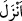
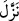

Câhil insan dünyanın mansıbına devlet lâkabını verir
Çocuğun elini ayağını şişmiş görür, şişman zanneder.
Zamanın çocuklarının zemmi bölümünde şöyle demiştir:
Şekilleri insan şekli, işleri yırtıcı hayvan işidir
Onlar elbise içinde kurtturlar ya da kurt içinde elbise.
Müşriklerin
putlarının
ulûhiyyet
mânâsı
taşıdıkları
iddiâsına
atfen
“semmeytumûhâ/onlara isim verdiniz” cümlesinin gelmiş olma ihtimali vardır.
Buradaki fiil cümlesi “esmâ/isimler” kelimesinin sıfat cümlesi olup, zamiri de esmâ’ya
râcîdir, esnâma râci değildir. Mânâ şöyledir: “onlara isimleri siz verdiniz, yoksa
onların (ulûhiyyet isimleri vardı da) bu isimlerle çağırdınız” anlamında değildir. Zîra
bir şeye isim takmak, isimle müsemmâ (isim verilen) arasında bir bağ kurmaktır. Bu
tesmiye şekli isim için kullandığında: “Bir kişi müsemmâya isim verdi”, müsemmâ için
kullanıldığında da, “Bir kişi isme bir müsemmâ takdîr etti” mânâlarına gelir ki bu âyette
birinci şekil kullanılmıştır. Müşriklerin “tanrılar” mânâsında tesmiye ettikleri isimlerin
kuru (boş) bir anlam ifâde ettiği ve “Siz O’nu bırakıp ancak sizin ve atalarınızın
taktığı bir takım (boş) isimlere tapıyorsunuz” (Yûsuf, 12/40) âyetinde buyrulduğu
gibi kesinlikle bu putların müsemmâlarının bulunmadığını, bunun hedef edilmediğini
âyet açıklamaktadır. Filhakikâ burada sadece müşriklerin taktığı ve takılan isme hak
sâhibi olmayan kuru isimler mevcuttur.
Bu isimler, bâtıl hevânız sâikiyle “sizin ve atalarınızın taktığı (boş) isimlerdir.” Bu
isimlerin sıhhati husûsunda “Allah onlar hakkında” Kur’ân’ın tamamı içerisinde “tanrı”
olduklarına dâir “hiç bir delil” hiç bir güç indirmemiştir. (__WORD__) kelimesi A’râf
sûresinden buraya kadar elif ile yazılmıştır. A’râf’tan önceki sûrelerde ise (__WORD__) diye
şedde ile getirilmiştir.
Bu cümlede, daha önceki hitap sigasından gâib sîgasına dönmenin nedeni; müşriklerin
yaptıkları çirkinliklerin artmış olmasının onlara hitab etmeden yüz çevirmeyi iktizâ
ettiğini bildirmek ve izledikleri bu isim takma olayının ve onun neticesi olan (çirkin)
amellerin onlardan başkasına anlatılması içindir.
“Onlar ancak” hak olarak vehmettikleri şey husûsunda bâtıl bir “zanna ve
nefislerinin arzusuna uyuyorlar.” Yâni onları cezbeden şey nefs-i emmârelerinin
kötülüğü özendirmesidir.
et-Te’vilâtü’n-Necmiyye’de müellif mânâyı şöyle takdir eder: “ Alçak ve şehvânî
olan nefislerinizin sapması, harap halde ve zâfiyet içinde bulunan akıllarınızın cehâleti
sebebiyle taptığınız putlar, ancak şekillerine verilen isim ve müsemmâ gayesi olmayan
âciz gayretlerinizin bir timsâlidir. Veyahut bunlar zayıf kuruntularınızın çabasının
neticesi ve babalarınızın yaptığı gibi zan ve hayalle karışmış olan hastalıklı akıllarınızın
idrak ettiği noktadır. Bu putların taleb, keşf ve kurbiyyet ehli indinde bir yeri ve